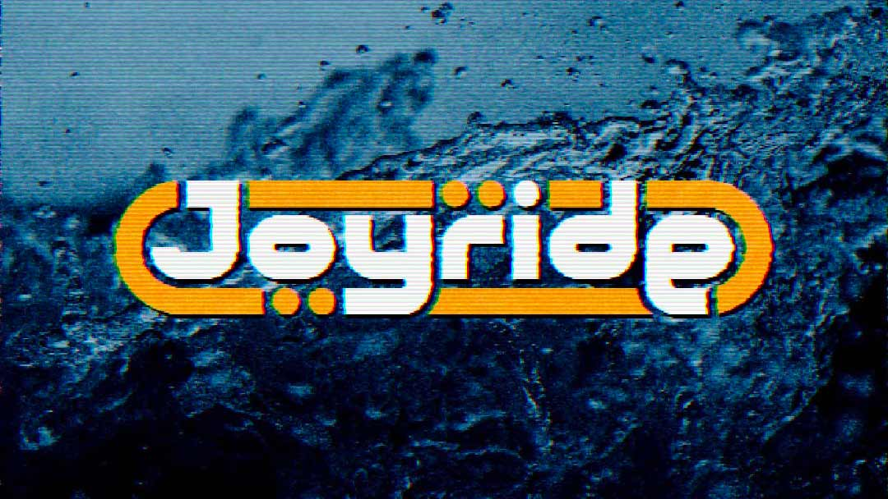
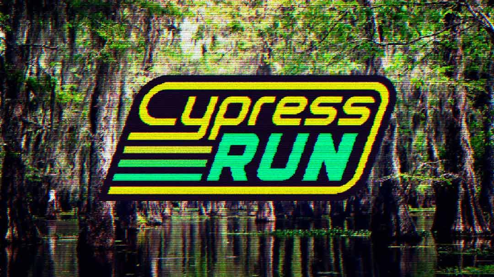
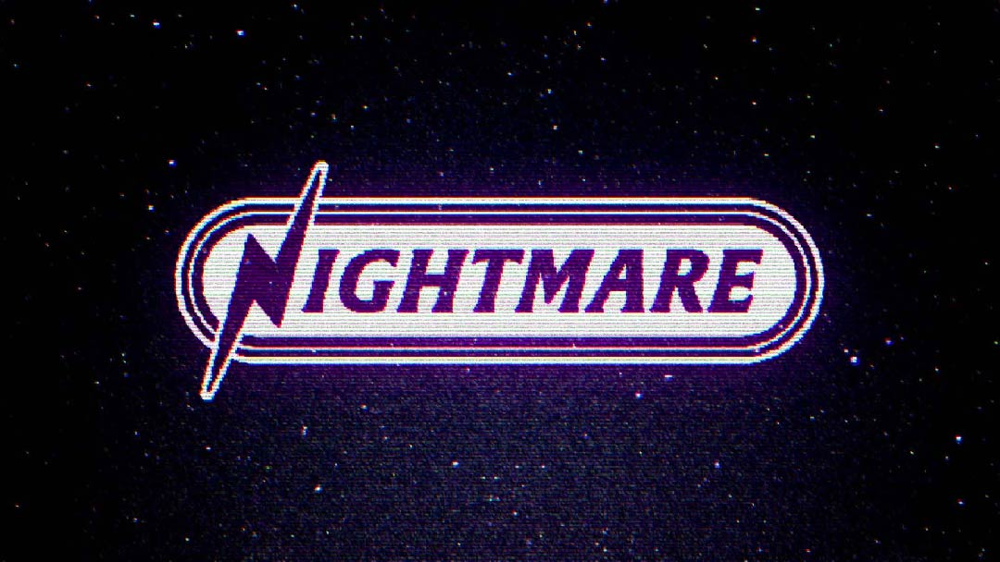
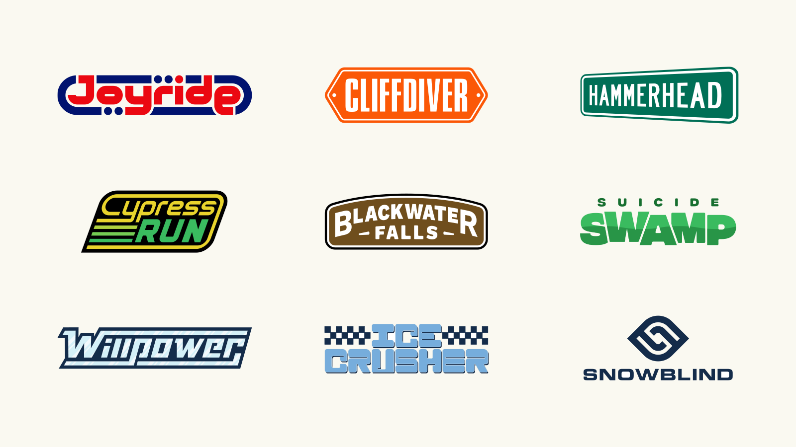
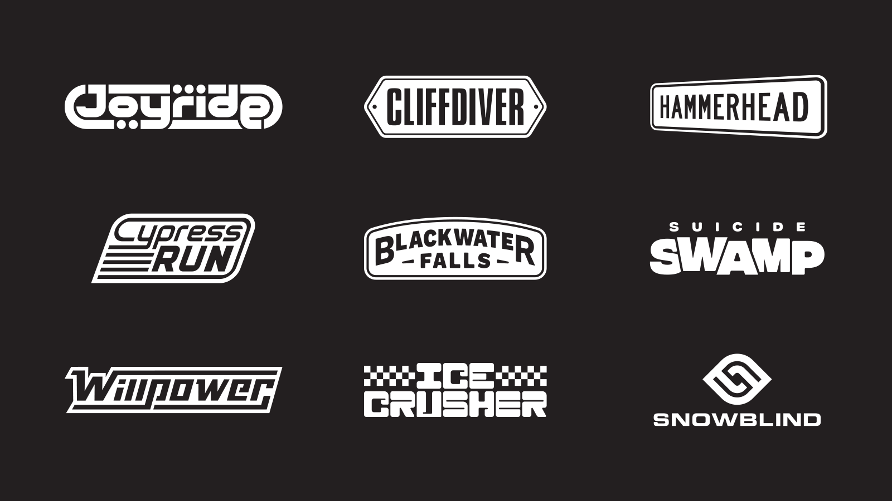
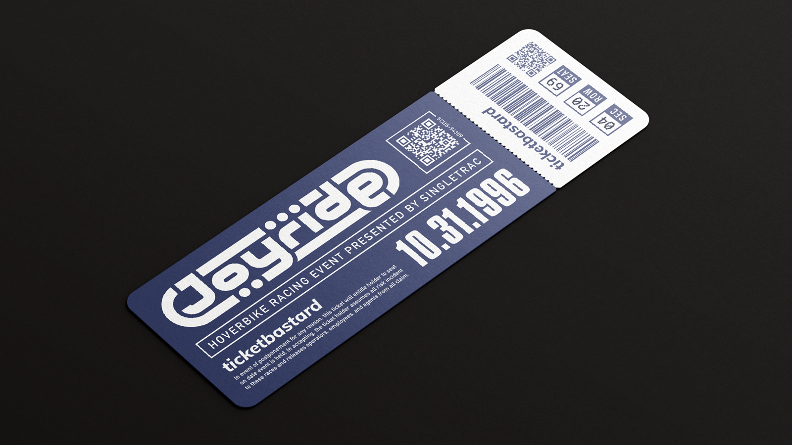

MATT COLE WILSON
————————————————————————————
graphic design / kansas city
MATT COLE WILSON
————————————————————————————
graphic design / kansas city
Some of my favorite graphic design work exists inside of PlaySation 1 racing games. The biggest example is the Designers Republic iconic work on the Wipeout series. Another high water mark for visual aesthetics is Ridge Racer Type 4. There's also Colin McRae Rally 2, Gran Turismo 1 and 2, etc, etc. I'm a huge fan of this stuff, so I wanted to make something in homage to the era.
I'm constantly poking around the PS1 library to find games I overlooked and Jet Moto is a recent discovery. I vaguely remember seeing it back in the day, but I don't think I ever played it until recently. It's *very* difficult and has some jank, but it has an amazing vibe. Hover bike racing over all sorts of seemingly post-apocalyptic terrain, while listening to a surf rock soundtrack. What a time the late 90s were!
The game has 10 race tracks, so I thought it'd be a fun challenge to create a logo for each of them. Here's what I came up with:



The first logo I created was Joyride, and I think it remains my favorite. The circles are meant to evoke the buoys that mark the bounds in several of the tracks. Hammerhead, Cliff Diver, and Blackwater Falls were inspired by warning signage, street signage, and national park signage respectively.



🏁PROJECT CREDITS:
Background images are from Unsplash. Distortion and CRT effects are from Photomosh. The ticket mockup is from mockups-design.com. This project was heavily inspired by Bao T. Nugyen's design work.
Fonts used: Joyride (fully custom), Cliffdiver (Compacta), Hammerhead (Roadway), Blackwater Falls (Work Sans Black), Suicide Swamp (Integral CF), Willpower (custom, but based on Yukarimobile), Ice Crusher (modified Excelorate), Snowblind (Eurostyle), Nightmare (Alberta Semibold).
© mattcolewilson → posted jan 2022